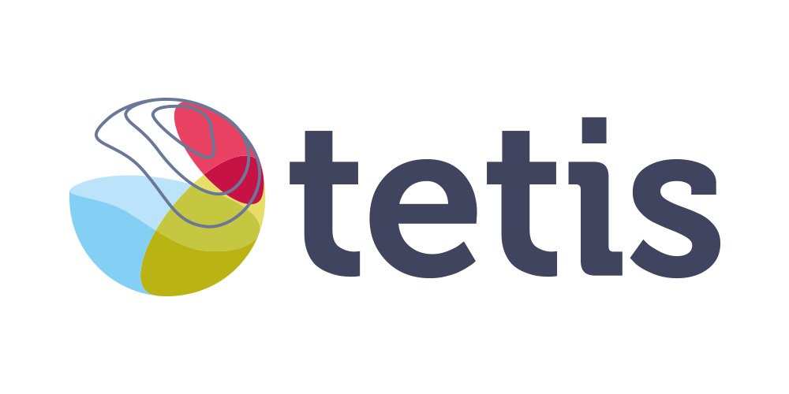
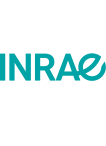
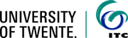

Coupling soil water, heat & air transfer
to canopy radiative transfer.
STEMMUS is a time-stepping soil water–heat–air transport model (the Richards equation for matric potential, plus coupled heat and soil-air pressure, across many soil layers and hourly time steps) — a fundamentally different kind of model from the per-simulation leaf/canopy radiative-transfer LUTs in ToolsRTM and SCOPEinR. STEMMUS + SCOPE couples that dynamic soil column to SCOPE’s canopy energy-balance, photosynthesis and fluorescence model, so the canopy’s lower boundary condition (soil temperature and moisture) comes from a real simulated soil profile instead of a static input.
STEMMUS Verification
We ran the same real 2013 simulation independently in R and Python — 90 hours of simulated soil behaviour across 37 layers — and compared soil moisture, temperature and air pressure at every layer, every hour. They agree. (This comparison is itself still a draft, not yet linked publicly.)
ToolsRTM Explorer
Leaf, canopy, soil & sensor models, LUTs, vegetation indices and inversion — the full per-simulation RTM toolbox, R and Python.
SCOPE Explorer
The coupled SCOPE forward model — leaf optics, energy balance, photosynthesis and fluorescence — R and Python.

J.-B. Féret — leaf & canopy model development (PROSPECT, PROSAIL)


Y. Zeng & Bob Su — STEMMUS-SCOPE developers